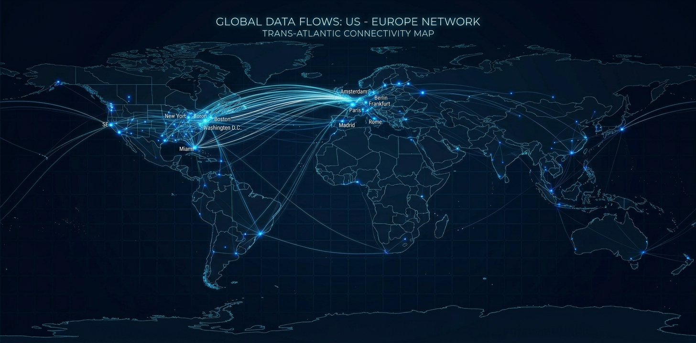
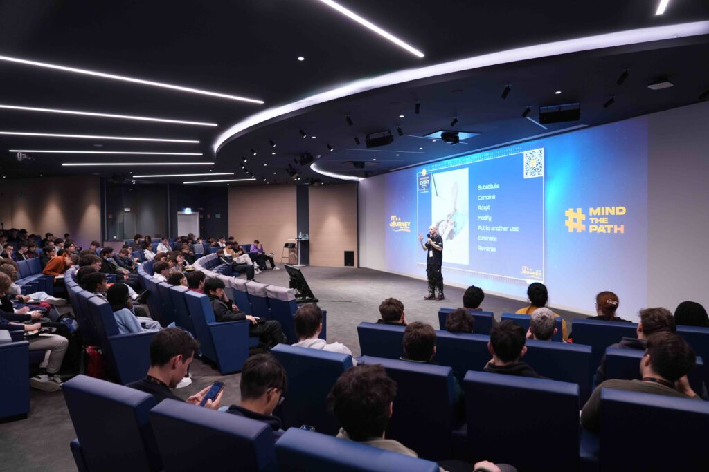
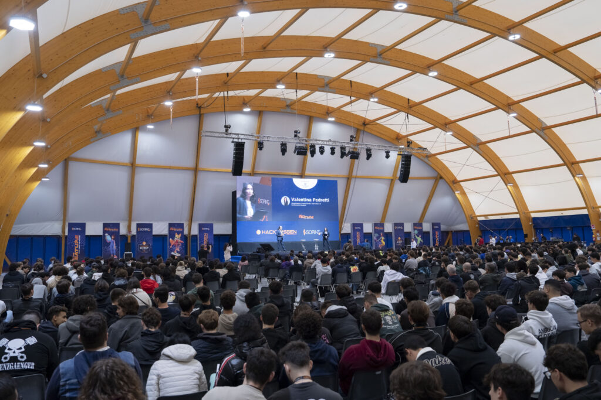

Salary benchmarks. Team structures. A hiring roadmap. Based on data from 500+ practitioners. Built by engineers who do this work every day — not recruiters.
80% of large enterprises now have platform engineering teams. Almost none can staff them properly. Salaries are up 25–35% since 2023, roles sit open for 90+ days, and the engineers who can do Kubernetes, IaC, CI/CD, and security all at once are being fought over by every company in the country.
This guide is the data and framework you need to build your platform team — whether you're starting from zero or scaling from 3 to 12.
Real numbers from market data, not aspirational ranges from job posting sites. These are base salaries — total comp at large tech companies can add $50K–$100K+ via equity.
| Role | Junior (1–3 yr) | Mid (3–5 yr) | Senior (7+ yr) | Principal |
|---|---|---|---|---|
| Infrastructure Platform Eng | $95K–$125K | $115K–$165K | $155K–$210K | $220K–$270K |
| DevEx Platform Engineer | $100K–$130K | $125K–$175K | $160K–$215K | $225K–$275K |
| Security Platform Engineer | $105K–$135K | $130K–$180K | $165K–$225K | $235K–$290K |
| Reliability Platform Eng | $100K–$130K | $120K–$170K | $155K–$215K | $225K–$275K |
| Platform Product Manager | $95K–$120K | $120K–$160K | $150K–$200K | $195K–$260K |
| Head of Platform Eng | — | — | $200K–$275K | $260K–$350K+ |

| Region | Avg. Salary (USD) | vs. U.S. Savings | East Coast Overlap |
|---|---|---|---|
| Western Europe (UK, Germany, France) | $95K–$140K | 15–25% | 5–6 hours |
| Southern Europe (Italy, Spain) | $70K–$110K | 30–40% | 6 hours |
| Eastern Europe (Romania, Poland) | $55K–$95K | 35–50% | 6–7 hours |
These aren't offshore contractors on freelancer platforms. These are senior engineers from mature European tech markets with strong CS education systems, fluent English, and GDPR compliance built in. Sorint has offices and recruiting teams on the ground across all seven countries.
The days of “hire a couple DevOps people and call it a platform team” are over. In 2026, mature platform organizations have distinct specializations.
Strategic leadership, roadmap ownership, stakeholder alignment. 32.9% of platform teams now report to a dedicated HOPE. Without one, the team operates reactively — fighting fires instead of building capabilities.
Builds the resource layer — compute, networking, storage, cluster management, IaC. This is the foundation. Look for: deep Kubernetes, Terraform/Pulumi, and the BACK stack (Backstage, ArgoCD, Crossplane, Kyverno).
Production stability — SLOs, incident management, observability, chaos engineering. The evolution of SRE into the platform context. Mature observability reduces MTTR by ~40%.
Embeds security into the platform — policy engines, secrets management, compliance automation. 93% of teams can't integrate app security with cloud security. Commands the highest salary premiums of any platform role.
Reduces developer friction — portal UIs, CLIs, documentation, golden paths. The #1 challenge in platform engineering is developer adoption. This role exists to solve it.
User research (your developers are the users), roadmap execution, measuring adoption. Only 21.6% of organizations have a dedicated PPM. The other 78.4% wonder why developers don't use their platform.
2–3 people • Serves 20–40 developers
Start here. Leadership, someone to build the infrastructure layer, and someone to keep it running.
4–6 people • Serves 40–100 developers
Add security (especially if regulated) and either product management or developer experience.
7–12 people • Serves 100–200+ developers
All six roles covered. Mature platforms achieve 20:1 developer-to-platform-engineer ratios while cutting time-to-market in half.
80% of enterprises have platform teams. Only 13% are mature. Most organizations overestimate their maturity by one full level. Plan for 6–12 months per stage.
No dedicated platform team. DevOps/infra engineers build scripts reactively. No shared services, no developer portal.
Dedicated team exists but is reactive. Basic CI/CD, some IaC, limited self-service.
Paved roads for common use cases. Internal developer portal (likely Backstage). Some self-service.
Developers provision, deploy, and monitor without platform team involvement. Golden paths cover 80%+ of use cases.
Platform treated as an internal product with users, roadmap, and NPS. Developer adoption actively tracked.
The most effective approach in 2026: U.S.-based leadership combined with European senior engineers from mature tech markets.
| Role | Location | Salary | Notes |
|---|---|---|---|
| Head of Platform Eng | U.S. (hybrid) | $220K | Must be local for stakeholders |
| Sr. Infrastructure Eng | U.S. or EU | $170K / $105K | Can be remote |
| Reliability Platform Eng | Romania / Poland | $85K | 6–7 hr overlap with East Coast |
| Security Platform Eng | Romania / Poland | $90K | GDPR-native compliance culture |
| DevEx Platform Eng | U.S. or EU | $160K / $100K | Developer empathy required |
We strategically engineer business and technology initiatives — delivering solutions from discovery and implementation to full support and maintenance, 24×7×365. Through a workforce of 1,500+ professionals spanning 17 offices across the U.S. and Europe. Known for our 98% customer retention rate.

When we assess a platform engineer, our own senior engineers run the technical evaluation — not a recruiter matching keywords. We built Agola, an open-source CI/CD platform. Platform engineering isn't a service line we added last year.
Offices and recruiting teams on the ground across the U.S., Italy, Romania, Poland, Spain, Germany, France, and the UK. Senior platform talent in overlapping time zones at rates that work for your budget.
VMware-to-OpenShift migrations. Ansible automation at enterprise scale. Multi-cloud architectures for global companies. We place engineers for this work because our engineers do this work.
No automation in place. Relying on individual bash scripts. No centralized platform. Sorint designed and implemented a full automation and compliance framework spanning provisioning, CI/CD, disaster recovery, patch management, and infrastructure optimization.
Three crashes to a critical ERP system within 2 months. No SLA. Governance breakdown. Sorint executed a complete cloud migration, JD Edwards upgrade, and implemented 24×7 managed services with FinOps.
Delivered within budget while maintaining flexibility to adapt evolving requirements. Governance framework ensured quality without sacrificing agility.
Standout synergy, timely reporting, and consistent response times across complex operational technology needs.
“Gold medal. SORINT could not do better, perfect! Every promise and every deadline was met!”
“The governance factor ensured the project is delivered within budget, while maintaining flexibility to adapt our evolving needs.”
“Synergy, timely management of reports, and consistent response time to operational needs stood out for us!”

Sorint engineering community — 1,500+ professionals across 17 offices
You just read the playbook. We can help you run it.
Free Platform Team Gap Assessment. 30 minutes with one of our platform engineers. We review your team, stack, and open roles — then map your next 2–3 hires. No sales pitch.
Book Your AssessmentNot ready to talk? We publish platform engineering hiring insights regularly. No spam, unsubscribe anytime.